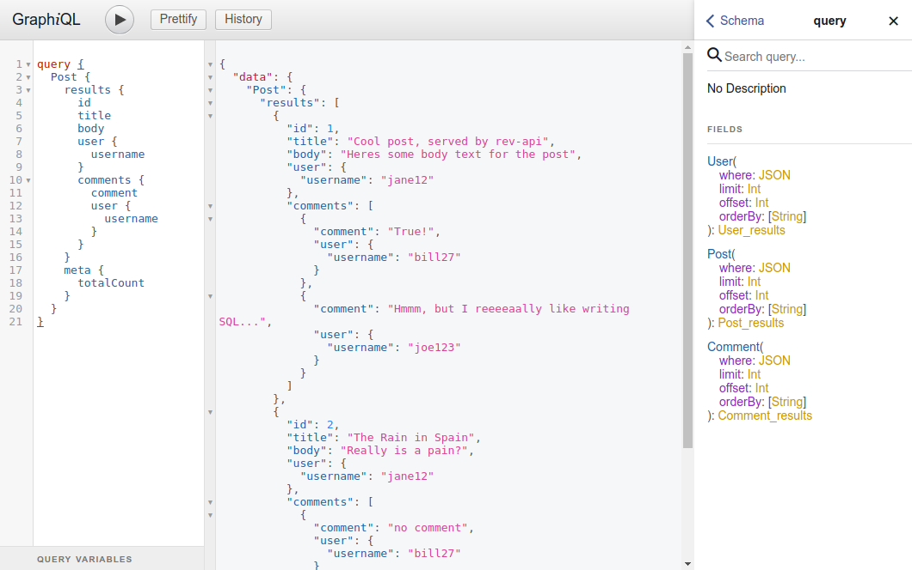
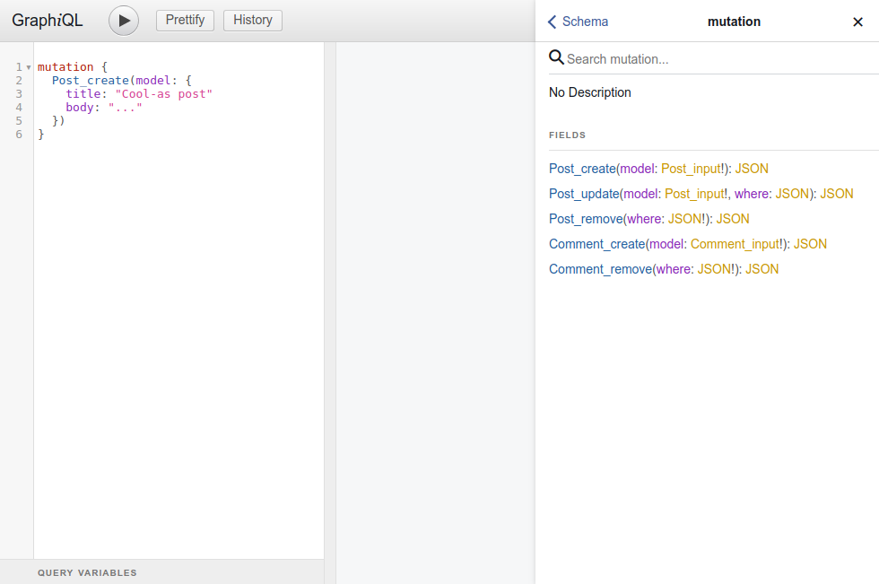

Creating a GraphQL API¶
The rev-api module of RevJS allows you to easily make your models available
over the network, via an automatically-generated GraphQL API.
- Models are exposed via the ModelApiManager.register() method, and you can choose to expose all of your models via the API, or just a subset of them.
- You can choose which operations (create, read, update, remove) to allow on your models via the API.
- You can also expose some of your model methods as GraphQL mutations.
Registering API Models¶
The example below shows how to specify the allowed operations for specific models, and register them with an API:
import {
AutoNumberField, TextField, RelatedModel, RelatedModelList,
ModelManager, InMemoryBackend
} from 'rev-models';
import { ApiOperations } from 'rev-api/lib/decorators';
import { ModelApiManager } from 'rev-api';
// Use the @ApiOperations decorator to specify what operations are allowed for each model
@ApiOperations(
['read']
)
export class User {
@AutoNumberField({ primaryKey: true })
id: number;
@TextField()
username: string;
@RelatedModelList({ model: 'Post', field: 'user' })
posts: Post[];
@RelatedModelList({ model: 'Comment', field: 'user' })
comments: Comment[];
constructor(data?: Partial<User>) {
Object.assign(this, data);
}
}
@ApiOperations(
['create', 'read', 'update', 'remove']
)
export class Post {
@AutoNumberField({ primaryKey: true })
id: number;
@RelatedModel({ model: 'User' })
user: User;
@TextField()
title: string;
@TextField({ multiLine: true })
body: string;
@RelatedModelList({ model: 'Comment', field: 'post' })
comments: Comment[];
constructor(data?: Partial<Post>) {
Object.assign(this, data);
}
}
@ApiOperations(
['create', 'read', 'remove']
)
export class Comment {
@AutoNumberField({ primaryKey: true })
id: number;
@RelatedModel({ model: 'Post' })
post: Post;
@RelatedModel({ model: 'User', required: false })
user: User;
@TextField()
comment: string;
constructor(data?: Partial<Comment>) {
Object.assign(this, data);
}
}
export const modelManager = new ModelManager();
modelManager.registerBackend('default', new InMemoryBackend());
modelManager.register(User);
modelManager.register(Post);
modelManager.register(Comment);
export const api = new ModelApiManager(modelManager);
api.register(User);
api.register(Post);
api.register(Comment)
NOTE: The seperate import from rev-api/lib/decorators is designed so you
can share the same model definition between your front and back-end code,
without inadvertently including rev-api back-end code in your front-end
bundle.
Exposing your API via HTTP¶
APIs created via rev-api can be exposed by any web framework that can
serve GraphQL JS schemas. A good
example is Apollo GraphQL Server
which supports most popular NodeJS Web Frameworks.
In the example below, we use apollo graphql server to serve our API:
import * as koa from 'koa';
import * as koaRouter from 'koa-router';
import * as koaBody from 'koa-bodyparser';
import { graphqlKoa, graphiqlKoa } from 'graphql-server-koa';
// Load RevJS API and generate GrapQL Schema
import { api } from './defining_an_api';
import { createData } from './model_data';
const schema = api.getGraphQLSchema();
// Create Koa & Apollo GraphQL Server
const app = new koa();
const port = 3000;
const router = new koaRouter();
router.post('/graphql', graphqlKoa({ schema: schema }));
router.get('/graphql', graphqlKoa({ schema: schema }));
router.get('/graphiql', graphiqlKoa({ endpointURL: '/graphql' }));
app.use(koaBody());
app.use(router.routes());
app.use(router.allowedMethods());
app.listen(port);
console.log(`GraphQL Server is running on port ${port}.`);
console.log(`GraphiQL UI is running at http://localhost:${port}/graphiql`);
// Load sample data
createData()
.then(() => {
console.log('Data Loaded.');
})
.catch((e) => {
console.error('Error loading data', e);
})
GraphQL Query Schema¶
The GraphQL query {} schema lets you read models and fields in a hierarchical
way.
- RevJS generates a top-level Query object for each model you expose for read access
- You can use the standard
read()function options (where,limit,offsetandorderBy) when querying the top-level Query objects - Query objects contain a
resultskey, containing the matching models, and ametakey, containing the currentlimit,offsetandtotalCountvalues. - RevJS respects the RelatedModel and RelatedModelList fields you define on your models, and you can drill-down on these fields to any level in your GraphQL query.
The screenshot below shows the GraphQL Query Schema generated from the examples above:

GraphQL Mutation Schema¶
The GraphQL mutation {} schema provides access to create(), update() and
remove() functions, for all models you have enabled these for. Any
custom API Methods you have created will also be available here.
The screenshot below shows the GraphQL Mutation Schema generated from the examples above:

Security¶
It is very important to consider security when exposing data via an API. Currently you must implement security policies in your models, and at the Web Server layer (e.g. by securiing your API with Passport).
In future releases we may implement support for middleware, which could be used for authentication and authorisation, but currently we do not have support for this. Contributions welcome! :)